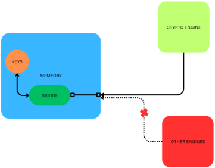
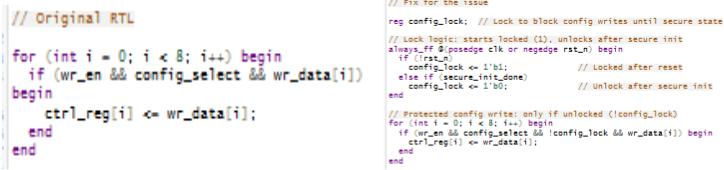
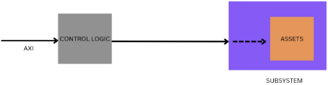
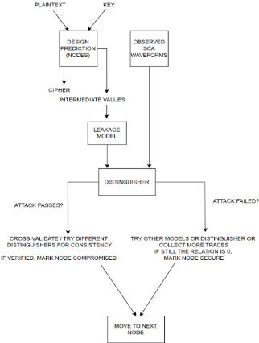

安全验证实践：SoC 子系统流前分析的经验教训
论文针对传统功能验证以正确性、性能和覆盖率为中心、难以发现硬件安全漏洞的问题，提出一套流前（综合前）安全验证框架，将静态与动态技术结合并融入现有 DV 流程。方法包含三项技术：在现有 lint 流程上叠加安全检查项的安全 linting、基于仿真对敏感资产打标以验证 CIA 三性的信息流跟踪（IFT），以及使用 CPA、NICV、DPA 等统计区分器的仿真驱动功耗侧信道分析（SCA）。在三个子系统（控制类 FSM 模块、密码引擎、NVMe queue manager 等）上的评估显示：安全 linting 发现了普通 lint 遗漏的逐位/逐字节比较、复位后可配置逻辑等问题；IFT 发现因 scoping 错误导致的外部写资产泄漏路径并促成加锁机制等架构改进；SCA 在未掩码 AES 第一轮观测到泄漏，掩码版未泄露子密钥。论文还总结了误报、参数化设计分析困难、依赖激励质量等工程挑战，并建议安全 linting 贯穿 RTL 开发全程、IFT 在功能测试约 70% 完成后部署。
传统功能验证聚焦正确性、性能与覆盖率，无法发现攻击者可通过物理、固件或协议层攻击利用的细微安全缺陷（如 FSM 缺失 default case、资产数据流向未授权位置、复位后关键信号可被改写）；安全 bug 在开发周期后期才发现则修复更难、成本更高。论文要解决如何在流前（综合前）阶段系统性检测 SoC 子系统的安全漏洞，将安全左移并融入现有设计与验证工作流，且不破坏现有生产力。
提出以资产为中心、分层的安全验证框架，验证目标对齐机密性/完整性/可用性（CIA），结合三类技术：(1) 静态安全 linting：作为现有 lint 工作流的附加项，检测不安全 FSM 状态转换、不可达/未定义状态、缺失 default、复位后关键信号可配置、逐位/逐字节比较等模式，并可将问题映射到 CWE 漏洞类别；(2) 动态信息流跟踪（IFT）：基于仿真对资产打标，按层级 scoping 从外部 agent 经访问控制逻辑追踪到含资产模块，验证 CIA 三性（如内存中仅允许 HWID 匹配的 crypto engine 访问的密钥）；(3) 侧信道分析（SCA）：基于 RTL 仿真开关活动，采用 Hamming weight/distance 泄漏模型与 CPA、NICV、DPA 等区分器，逐节点迭代定位泄漏点。部署策略：安全 linting 贯穿 RTL 开发全程与常规 lint 并行；IFT 在功能测试至少 70% 完成或 RTL freeze 前部署；分析范围限定在相关子层级而非整个 SoC。
安全 linting 在含多 FSM 的控制类子系统检出缺失 default case、不安全状态转换、don't care 值，以及普通 lint 工具无法捕获的逐位/逐字节比较、复位后控制逻辑可配置、IP 实例化端口未连接等关键问题（论文未给出具体问题数量）
IFT 发现一条因 scoping 错误导致、允许外部写资产的泄漏访问路径，并促成对敏感逻辑增加 lock 机制的架构改进建议；对 eHSM 访问路径的评估未发现功能问题，但产生了增加防护措施的架构建议
SCA 在未加掩码的单 AES 设计第一轮（SubBytes 与密钥混合阶段）观测到泄漏，可恢复的子密钥数量与 trace 数量相关；对单个掩码 AES 设计未能恢复任何子密钥；结果依赖 CPA 与 DPA 区分器的选择（论文未给出具体子密钥数与 trace 数）
区别于以正确性为中心的传统功能验证和通用 lint 工具，论文提出以资产为中心、CIA 对齐的安全验证框架：将安全检查嵌入现有 lint 流程以降低设计与验证团队的采用门槛；把静态 linting、IFT 与流前侧信道分析组合成可回归（regressionable）的评估框架；给出工程化部署经验（linting 全程运行、IFT 在功能测试 70% 后部署、层级化 scoping、检测结果映射 CWE），并强调安全验证需要与功能验证不同的资产/威胁模型思维方式。
相关度级别：high
命中能力域：2.4 设计验证方法学 | 2.2 RTL 设计与实现
理由：论文核心是流前安全验证方法学，直接命中 2.4 设计验证方法学：安全 linting 作为现有 lint 流程的附加项、IFT 依赖功能测试激励并需以可回归方式运行、强调 DV 与设计/架构团队的前后协作，均与团队回归 CI、bug triage 与验证方法学沉淀能力直接对应。同时命中 2.2 RTL 设计与实现：安全 linting 在 RTL 开发全程与常规 lint 并行，检出的 FSM default 缺失、复位后可配置逻辑、逐位比较、端口未连接等属于 RTL 质量与编码规范范畴，与团队 lint/CDC/RDC 质量检查流程可直接衔接。团队交付 LPDDR/HBM/UCIe 等含访问控制、寄存器权限管理与密钥类资产的 IP，论文的 AXI 控制逻辑 IFT 案例、eHSM 访问路径评估与资产中心 scoping 方法可迁移到团队 IP 的安全敏感模块。
建议动作：深入精读并做内部分享
Yashwanth Kumar A R，Rachana Maitra
Marvell Technology, Inc
yarajeshkuma@marvell.com，rmaitra@marvell.com
摘要——随着片上系统（SoC）架构复杂性的不断提升，在设计周期早期应对安全漏洞的紧迫性也日益增加。仅依靠传统的功能验证，不足以检测出那些攻击者可能通过物理、固件或协议层攻击加以利用的隐蔽安全缺陷。本文提出了一种实用的流片前（pre-silicon）安全验证框架，该框架集成静态与动态技术，以在流片前阶段——具体而言，即在综合之前——发现漏洞。该方法融合了三类技术：面向安全的 Lint 检查，用于检测寄存器传输级（RTL）代码中安全敏感的弱点；动态信息流跟踪，用于确保资产的机密性与完整性；以及侧信道分析，用于通过功耗分析识别潜在的泄露路径。上述技术的评估在多个子系统上开展，这些子系统的选取依据是它们对实际威胁模型的适用性以及架构的多样性。本文还讨论了所遇到的挑战，包括结构支持方面的局限、抽象层次的不匹配，以及设计与验证团队之间需要加强协作。一个关键观察是：安全验证必须以资产为中心并采用分层方式，且验证目标应与机密性、完整性和可用性（CIA）保持一致。该框架不仅有助于在开发周期中将安全左移，还能让团队为主动思考威胁建模与测试覆盖做好准备。未来的工作将侧重于把该方法扩展到更多子系统、增强自动化，并使安全漏洞检查与通用缺陷枚举（CWE）等行业标准保持一致。
现代片上系统（SoC）和寄存器传输级（RTL）设计日益复杂，带来了大量传统验证方法学无法识别和解决的安全挑战。随着SoC集成越来越多的异构组件，安全漏洞的可能性——从数据泄露到权限提升——显著增长。这些漏洞既可能是有限状态机（FSM）中简单遗漏一个 'default' case 语句，也可能是更复杂的场景——资产处于未受保护的状态，这种情况可以通过实现安全边界或访问控制机制来解决。如果这些漏洞被忽视，就可能被攻击者利用，导致声誉受损、经济损失以及用户信任的丧失，尤其是在当今这个人工智能时代。
多年来，安全验证，尤其是硬件安全，一直被视为“锦上添花”，是一种附加项。更重要的是，在芯片开发流程中，尽早开展安全验证可以减少安全威胁对设计乃至芯片造成的损害。在开发周期后期发现的安全缺陷不仅更难修复，而且缓解成本更高。业界如今已认识到“左移”的必要性，这可以通过将安全分析引入设计流程的更早阶段来实现，尤其是在流片前验证阶段。这种思维和行动上的转变，使得架构缺陷、不安全的设计模式和非预期的数据流能够在系统中变得根深蒂固之前就被识别出来。
尽管这种意识日益增强，但将安全集成到传统设计验证（DV）流程中仍然充满挑战。功能DV主要关注正确性、性能和覆盖率，例如按照模块规范对某个模块执行正常的读/写测试；而安全验证则需要一种不同的方法——一种以资产为中心的方法，例如测试资产是否流向非预期的位置，或在非预期的时间发生流动。机密性、完整性和可用性（CIA）等安全目标必须转化为具体的验证目标，这包括创建威胁模型、建立规则，以及制定以资产为中心的测试策略。
遗憾的是，由于硬件威胁的不断变化、标准实践与度量指标的缺失，目前仍存在诸多困难。为了识别潜在威胁向量、描述关键资产并理解系统的安全意图，验证团队通常需要与设计人员密切协作。这种协作对于确保安全验证成为一项有意义且高效的过程是必不可少的。它还要求思维方式的转变，即设计、验证和架构团队应将安全视为共同的责任。
本文聚焦于一个实用的流片前（pre-silicon）安全验证框架，该框架是对传统设计验证（DV）流程的补充。通过结合静态与动态技术，该框架能够早期发现与控制逻辑、数据通路和资产暴露相关的漏洞。它强调了左移（shift-left）方法的重要性，并就如何在不影响生产效率的前提下将安全验证无缝集成到现有工作流程中提供了见解。其目标是使安全验证具备可扩展性和实际影响力，从而最终有助于实现更具韧性的设计。
流片前设计中的安全验证需要一种资产感知（asset-aware）的方法，以超越基于设计规格的传统功能正确性。本文所采用的方法是多管齐下的，将静态与动态技术相结合，以全面评估设计针对机密性、完整性和可用性（CIA）威胁的韧性。每种技术在识别不同类别的漏洞方面都发挥着独特的作用，它们共同构成了一个早期安全保障框架。
基于静态安全的验证主要是在设计阶段对所涉及的设计进行分析，无需仿真或运行时间。该技术直接针对安全问题对 RTL 代码进行分析，可以采用形式化方法、结构检查或代码分析。这种静态安全方法是对现有 lint 工具的附加补充，这些工具在设计团队中被广泛使用，团队通过运行大量 lint 检查来检测 RTL 中的代码错误。这样一来，基于安全的 lint 检查对于设计团队乃至设计验证团队而言都更容易被采纳。
鉴于上一段所列的诸多优势，静态安全分析必须被确立为第一道防线：它易于集成到现有的 lint 工作流程中，并且不需要任何仿真时间，这一点不同于基于动态的安全验证中所使用的技术。尽管具有上述优势，基于静态的安全检查也存在一些局限性：它们无法用于检测动态行为，并且从安全角度来看仅限于结构和语义层面的检查。
这包括检测不安全的数据/控制路径、不可达或未定义的状态，以及不安全的有限状态机（FSM）转换等。在识别可能导致可被绕过的逻辑、未授权访问或权限提升的设计模式方面，静态检查尤为有用。即使是没有深厚安全知识的团队也能够使用这些检查，因为它们具有良好的可扩展性，在集成到现有 lint 流程时能够以精简的方式加以使用。
就基于动态的安全验证方法而言，它包含多种类型的安全漏洞识别技术，但本文将主要讨论如 [1] 所示的信息流跟踪（IFT）以及侧信道分析。信息流跟踪是一种特别有用的方法，它更加侧重于监控设计或 IP 中存在的资产。它通过模拟敏感信息（资产）在设计中的流动方式，确保其不会泄露到不安全或未经授权的位置。IFT 对于确认读/写权限得到正确执行、以及数据隔离在各特权域之间得以维持尤为有用。
这种信息流分析主要基于所讨论资产的机密性、完整性和可用性。例如，一个存储器内部存有密钥，这些密钥就是我们的资产。如图 1 所示，在该设计中，存储在存储器中的秘密加密密钥仅可由通过唯一硬件 ID（HWID）匹配识别出的加密引擎访问。利用 IFT 分析，我们可以通过确保密钥从不泄露至未经授权的输出来验证其机密性，通过确认只有经授权的引擎才能修改它来验证其完整性，并通过检查加密引擎在需要时能够访问该密钥来验证其可用性。这展示了在现实的、由激励驱动的条件下对机密性-完整性-可用性（CIA）三元组的强制执行。

侧信道分析（SCA）是另一种关键的动态验证技术，主要用于通过观察经由功耗产生的间接泄露来评估敏感资产的机密性。与其他结构性或功能性检查相比，SCA 关注的是翻转活动中依赖于数据的变化可能会如何无意间泄露有关秘密值（例如加密密钥）的细节。SCA 可以在流片前环境中借助基于仿真的功耗估计来开展，这些功耗估计在受控激励下分析翻转行为，以找出敏感数据与内部信号之间的相关性。
采用侧信道分析（SCA）方法，注入测试向量，并随时间观察设计的开关行为。随后，使用统计方法来检查是否有任何内部信号表现出依赖于数据、且可能被攻击者利用的模式。该方法尤其适用于发现部分密钥泄露，以及安全域与非安全域之间可能通过常规测试无法察觉的意外连接。通过模拟真实的攻击场景，SCA 使人们能够在早期识别潜在的泄露通道。这使设计者能够在流片之前实施掩码、随机噪声生成或逻辑随机化等对策。尽管 SCA 在流片后阶段进行时收益要大得多，但在流片前阶段实施同样是有益的，因为它能够及早发现潜在的泄露信号和路径，从而减少代价高昂的硅片重新流片。
为了验证所提出的安全验证技术，评估中选取了范围广泛的子系统。选择所依据的思路是最大化覆盖各类安全相关逻辑类型，例如密码引擎、面向控制的有限状态机（FSM），以及诸如 NVMe 队列管理模块之类的数据管理单元。这些模块的选择依据是它们对系统安全态势的关键性，以及它们在实施访问控制或管理敏感数据方面所扮演的角色。其目标是在加强信任根（RoT）组件安全性的同时，将安全鲁棒性拓展到扩展组件和资产上。
理想的做法是，即使无法覆盖大部分 SoC 设计，也至少要将静态与动态方法同时部署到安全敏感模块上。这是因为系统的安全性取决于其中最薄弱的环节。尽管我们承认，要在大部分 SoC 模块上完成彻底的安全验证需要耗费大量的时间和精力，但对于承载资产的模块、关键处理器等，在使用静态与动态验证方法进行分析这一点上不应有任何妥协。
另一条经验法则是，在 RTL 开发的整个过程中使用所提出的安全 linting，因为设计者在 RTL 开发期间本来就会并行使用常规的 linting。至于动态方法，尤其是信息流跟踪（IFT）分析，由于它需要仿真，因此最好在功能测试至少完成 70% 时或在 RTL 冻结之前部署这些技术。这是因为 IFT 依赖功能测试来激活相关信号并对模块进行有意义的激励，从而使相关信号的标记具有意义。
定义验证范围也是该流程中的一个至关重要的阶段。该方法学侧重于将分析范围限定在相关的子层次结构中，而不是分析整个 SoC。一个通用的例子是从外部代理经访问控制逻辑到达包含资产的模块的路径。这种层次化的范围界定确保了分析始终保持易于处理，同时仍能捕获有意义的安全属性。
这一结构化的评估框架使安全验证方法学能够以可扩展且可回归的方式加以应用。它还凸显了与设计和架构团队尽早开展协作的重要性，以便识别关键资产、定义威胁模型，并使验证目标与安全需求保持一致。
读者应当注意，作者在专有设计上对其方法进行了评估，这些设计既包括无已知缺陷的设计，也包括注入了人为缺陷的设计，以确认基本功能与稳健性。其目的在于表明这些技术能够检测出已知问题，并可靠地处理受控测试，从而证明其实用价值。
Static security linting was applied to a control-oriented subsystem with multiple FSMs and data/control path logic. The focus was on identifying vulnerabilities that could arise from unsafe state transitions, unreachable states, ambiguous reset behavior, and other subtle security violations. Additionally, the linting process flagged several FSMs with undefined default states and 'don't care' values, such as X, which could lead to unpredictable behavior under corner-case conditions.
While general linting tools might miss subtle failures that are security sensitive, the latest ones could catch some of the issues mentioned above. However, linting from a security point of view would provide much more insight into how the reported violation could lead to a security vulnerability. Static security linting has revealed a class of vulnerabilities that include incorrect usage of bytewise or bitwise control logic in configuration registers. This presents two significant security concerns. It first makes data-dependent behavior possible, including time or power-based attacks, which can be exploited by side-channel analysis. Second, such logic may allow unintended reconfiguration immediately after reset, before enforcement of access controls-posing potential security risks under specific conditions. If not properly mitigated, this behavior could introduce vulnerabilities that affect system integrity or access control enforcement. This is highlighted in Figure 2, where the left snippet is the original RTL, and the one on the right is a way to mitigate the vulnerability.

Although commonly used for write-one-to-set or write-one-to-clear register types, the original logic lacks temporal access control and assumes that all updates are trusted. Static security analysis highlights such issues that a regular linting tool will miss by identifying post-reset configurability of critical signals and flagging granular, bit-level comparisons as side-channel-prone structures. Now, this is up to the designer or verification engineer to waive or debug this flagging, understanding the entire design context. Issues like these could also be caught during the simulation verification phase, but they could be coupled with other issues, and the DV team can ignore these as mere warnings.
这凸显了面向安全的 lint 检查在识别那些仅凭功能测试可能并不明显的隐蔽漏洞方面的价值。在某些情况下，该分析框架能够将检测到的问题与标准化的漏洞类别相关联，例如 MITRE 制定的通用缺陷枚举（CWE）[2] 中所定义的那些类别。这一能力使人们对安全问题的本质有了更清晰的认识，并有助于形成更广泛的理解，即使对于刚接触硬件安全的工程师而言也是如此。这些结果进一步印证了静态分析作为第一道防线的价值，尤其是在 RTL 开发周期的早期阶段加以应用时。
信息流追踪（IFT）被应用于一个子系统，该子系统包含多个资产，由位于该子系统入口处的控制逻辑加以保护。这些资产只能由安全处理器进行配置，且该处理器必须满足控制逻辑的若干严格策略。目标是验证任何非安全处理器都不应影响这些资产，并且敏感数据不会泄露到未授权的输出。该分析按层次界定范围，以追踪信号从外部代理经控制逻辑流入包含资产的模块的流向。
如免责声明中所述，且由于专有性限制，具体的设计元素名称和实际漏洞无法披露。尽管如此，一个作为试金石测试而构造的实时场景有效地为评估我们的分析方法提供了基准。在此案例中，使用 IFT 追踪经过一个控制逻辑模块、再前往包含安全敏感资产的受保护子系统的 AXI 信号，以此对一种安全策略进行了评估，如图 3 所示。最初，分析将此标记为一个潜在的安全问题，因为对资产的访问似乎是允许的。然而，进一步的调查表明，该控制逻辑实施严格的访问控制策略，从其输出的任何 AXI 信号在设计上均被授权对子系统执行读/写操作，而这项检查本应在一开始就针对进入该控制逻辑的任何 AXI 信号进行。

图 3
在针对另一个子系统开展的另一项评估中，目标是验证在访问嵌入式硬件安全模块（eHSM）期间，数据路径上没有发生数据泄露。虽然分析证实了设计的稳健性，且未发现任何功能问题，但它带来了一项有价值的架构洞察，促使增加了进一步的保护措施。这一建议源于以资产为中心的安全视角，若未应用动态验证技术，它可能不会浮现。这一结果凸显了此类方法在增强设计韧性以及发掘主动安全加固机会方面的作用。
这些场景凸显了在规则开发与验证过程中结合上下文理解设计意图的重要性。此外，IFT 在试金石测试中识别这些细微行为的能力，也证明了动态安全评估在揭示真实漏洞方面的重要性。这表明此类技术能够揭示那些可能被标准功能测试所忽略的紧迫安全问题。
Side-channel analysis was performed on a subsystem implementing a cryptographic operation. The evaluation was focused on power-based leakage detection using simulation-driven switching activity analysis. The methodology involved injecting a stimulus and monitoring internal signal transitions to identify a correlation with sensitive data. Figure 4 illustrates a side-channel evaluation process that links the design behavior to physical leakage observations, as adapted conceptually from [3]
This workflow involved trace generation, where initially, simulation traces were generated from RTL-level testbenches of the targeted design. The framework extracted signal activity focusing on critical modules such as SubBytes, ShiftRows, and MixColumns. Input parameters (plaintext, key) and output parameters (ciphertext) were defined, and triggers were configured to capture transitions during encryption operations. This was a stimulus-based simulation. Further, during leakage analysis, it employed multiple statistical distinguishers, including Correlation Power Analysis (CPA), Normalized Inter-Class Variance (NICV). The analysis was performed on both unprotected and masked AES implementations.

The plaintext and key are inputs in this case to the AES, and intermediate node values are extracted to form predictions based on a chosen leakage model (e.g., Hamming weight or distance). These predictions are compared with measured side-channel waveforms using any distinguisher, such as DPA or CPA, to determine the correlation between predicted and observed leakage values. If the attack passes, which means there is a significant correlation, cross-validation with different distinguishers confirms whether the node is compromised. If no relation is found, alternative models, distinguishers, or additional traces are assessed, and if there is persistent failure, then the node is secure. This iterative node-by-node analysis continues across the design to localize leakage points.
所提出的安全验证方法被应用于三个不同的子系统，每个子系统均代表了多种安全关键逻辑，例如面向控制的模块、密码引擎等。该评估有助于验证静态与动态技术的有效性。
静态安全分析揭示了多个问题，尤其是有限状态机（FSM）控制逻辑中的问题，并检测到了缺失的 default case 语句、不安全的状态转换以及无关项值。更为重要的是，它标记出了一些关键问题，例如逐位/逐字节比较、复位后的控制逻辑配置、IP 例化端口未连接等，这些问题是常规 Lint 工具无法捕获的，尤其是那些隐蔽的安全问题。
尽管已通过安全 Lint 检查在发生违例的情况下对机密性、完整性与可用性（CIA）进行了映射，但仍采用信息流跟踪（IFT）以资产为中心的方法来验证 CIA，例如针对子系统内部资产的情形。该方法凸显了一条由于错误的作用域设置而产生的泄露访问路径，该路径允许对资产进行外部写入。该技术还带来了架构层面的改进，例如建议为敏感逻辑实现锁定机制——这一洞见正是通过以资产为中心的动态评估而得出的。
| 0 | 1 | 2 | 3 | 4 |
|---|---|---|---|---|
| TEST CASE | NUMBER OF TRACES | WORKING DISTINGUISHER (DPA / CPA) | SUBKEYS RECOVERED (out of 16) | LEAKAGE DETECTED |
| Unprotected AES | 500 | NONE | 0 | NO |
| 1000 | CPA | 7 | PARTIAL | |
| 5000 | BOTH | 16 | YES | |
| 10000 | BOTH | 16 | YES | |
| Masked AES | 500 | NONE | 0 | NO |
| Masked AES | 1000 | NONE | 0 | NO |
| Masked AES | 10000 | NONE | 0 | NO |
| 0 | 1 | 2 | 3 | 4 |
对于侧信道分析（SCA）评估，如表 1 所示，其在带掩码与未掩码的单个高级加密标准（AES）设计上均予以实施。如表所示，利用侧信道分析所确定的子密钥数量与该设计的信道迹线数量相关。在 AES 的第一轮中观察到了泄露，尤其是在 SubBytes 与密钥混合阶段。对于未掩码设计而言情况正是如此，而 SCA 未能为单个带掩码的 AES 设计找到任何子密钥。该分析还取决于在相关功耗分析（CPA）与差分功耗分析（DPA）之间所使用的区分器类型。
尽管该安全框架在检测对安全上下文有害的缺陷方面相当有用，但上述方法仍存在一些挑战和问题。
在静态分析过程中，某些复位信号分类导致了误报，需要人工检查以验证其解释。从设计角度来看，静态安全违例分析需要结合上下文理解，以确定它们是实际风险还是良性模式。初步评估显示，在分析具有大量参数化或宏使用的设计时存在挑战，尤其是当涉及 struct 和 pragma 构造时。
以资产为中心的方法本身也存在挑战，例如预分析阶段涉及范围界定、资产识别、威胁开发，以及从对策、可访问路径等方面对现有设计进行评估。除此之外，虽然该方法有助于发现违例，但需要验证工程师甚至设计人员的高度参与，以核实结果，并在预分析阶段进行初步头脑风暴。此外，该方法的有效性在很大程度上取决于功能测试用例的质量。激励覆盖不足会导致分析性能下降。
侧信道分析对基本的 AES 实现是有效的，但其对高级模式和更广泛的密码引擎的适用性仍有待未来探索。此外，没有任何迹象表明它可以同时处理多个引擎以及其他非 AES 引擎。另外，检测有意义的泄露需要大量的迹线，这显然增加了仿真和分析时间。
对该框架中各种安全方法的一些总体观察表明，安全验证需要一种不同于功能验证的方法，工程师必须从资产、威胁模型以及意外场景中的非预期行为的角度进行思考。此外，它需要在分析之前和之后与设计人员进行讨论。尽管初始设置可能需要投入精力，但针对一个设计模块所制定的完善策略和模板通常可以适用于类似的场景。这种方法可能适用于像 Caliptra 这样公开可用的设计，其中可复用的安全验证模板可以根据设计上下文进行调整。
正如我们在上文中所强调的若干挑战，这些挑战无疑为未来的改进提供了机会。虽然我们无法披露内部设计评估的细节，也无法提及第三方工具供应商的名称，但我们正与多家供应商积极开展合作。一个关键目标是建立稳健的静态安全 linting 方法论，将其作为第一道防线，同时我们继续改进动态安全验证方法。至于某些安全验证方法所需的前期投入，最好尽早让架构师、设计人员和验证团队参与进来，以确保在为时已晚之前达成认知与对齐。
本文清晰地凸显了在各类设计和 IP 中所采用的安全验证方法论的效率。尽管硬件安全验证尚不如功能验证成熟，且仍在持续演进，但已有若干公司开始接纳它。遗憾的是，行业内目前还缺乏足够的公开讨论来帮助确立一些标准实践，从而使安全验证更加有效，无论是使用内部方法还是第三方工具。本文还着重指出了当前方法论中的一些不足，这将有助于未来对安全验证方法论的改进。
| 0 | 1 |
|---|---|
| SoC | System on Chip |
| FSM | Finite State Machine |
| CWE | Common Weakness Enumeration |
| RTL | Register Transfer Level |
| IFT | Information Flow Tracking |
| SCA | Side Channel Analysis |
| NVMe | Non-volatile Memory express |
| AXI | Advanced eXtensible Interface |
| AES | Advanced Encryption Standard |
| eHSM | enhanced Hardware Security Module |
| 0 | 1 |
尽管无法保证绝对的安全性，作者们已在代表性设计上对所提出的方法学进行了评估，以验证其实际适用性。这些评估在受控环境中进行，以展示相关技术检测已知问题并提供一致结果的能力。其目的在于说明该安全验证框架的有效性以及未来的改进空间。